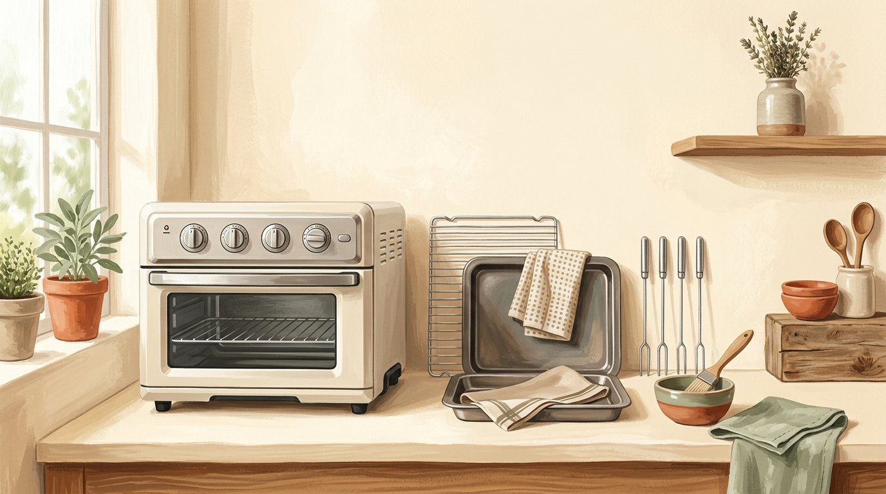

Oven-style multi-function
As an Amazon Associate I earn from qualifying purchases. How our links work
MULTI-FUNCTION · BUYER'S NOTEBOOK

"Air fryer, toaster, oven, dehydrator — all in one!" is a feature list, not a promise. These questions separate appliances that earn their footprint from appliances that host it.
Write the function list from the official listing (air fry, bake, broil, toast, rotisserie, dehydrate, reheat). Star only the ones you have used in the last month on any appliance. Two stars is a normal, honest result. Two stars do not need twenty-four presets — they need the right two functions done well.
Multi-function appliances earn their space by retiring another appliance: the toaster that moves to the cabinet, the second oven you only preheat at Thanksgiving. If nothing retires, you're buying counter furniture. Say out loud what it replaces — and whether that thing will really leave the counter.
Convection timing differs from radiant-oven timing; preset buttons trade control for convenience. If you cook by look-and-smell, presets matter less than a responsive temperature range and a good manual. If you cook by timer, presets matter more. There is no wrong answer — only an unexamined one.
A 26-quart-class appliance is furniture. Decide its home, measure it with door clearance, and check the counter can carry it without crowding the prep zone you actually use. Our capacity checklist has the tape-measure method.
| Question | If yes | If no |
|---|---|---|
| Would you use ≥2 functions weekly? | Proceed to footprint check | Buy the single-function tool |
| Does it retire an existing appliance? | Strong multi-function case | Weigh counter cost harder |
| Accessories included match your cooking? | Value is real | Price the extras before comparing |
| Measured home with door clearance? | Order with confidence | Measure before checkout |
No rankings, no prices, no review scores, no "best overall" badge. Listings we link are marked sponsored and disclosed above; specifics come from the official listing pages, which are the source of truth. See what's verified and what isn't.
Official sources: Amazon Associates Operating Agreement, §5 (disclosure) · Amazon Associates Program Policies · FTC Endorsement Guides FAQ · plus the manufacturer's own listing and manual for any exact model.
← Back to the notebookFrom the shortlist · sponsored links, disclosed above
Illustrations are ours, not product photos. Check the official listing for exact specifications, price and availability.